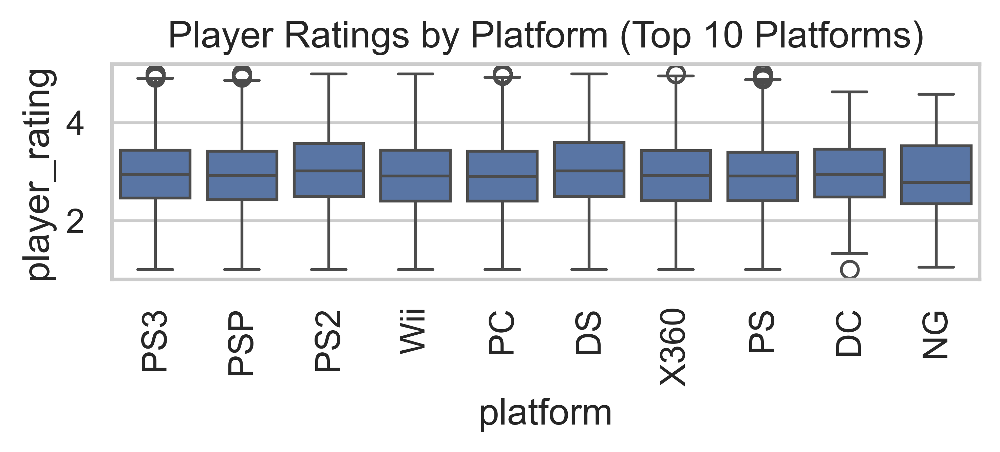
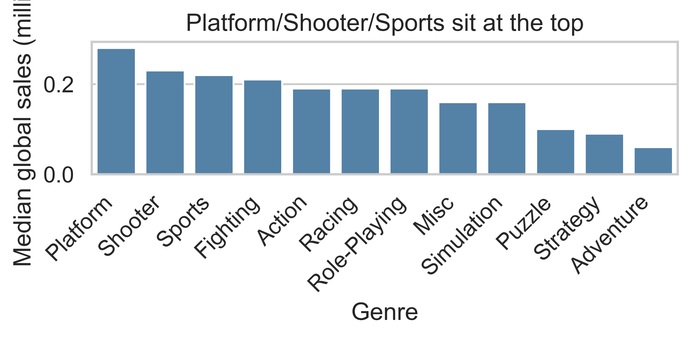
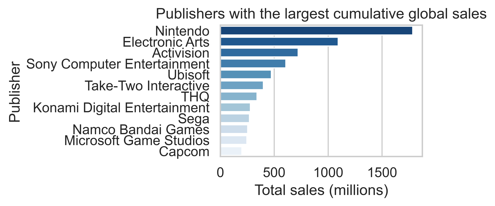

<class 'pandas.core.frame.DataFrame'>
RangeIndex: 11959 entries, 0 to 11958
Data columns (total 6 columns):
# Column Non-Null Count Dtype
--- ------ -------------- -----
0 user_id 11959 non-null int64
1 age_group 11959 non-null object
2 session_count_per_week 11959 non-null int64
3 avg_session_length_hours 11959 non-null float64
4 primary_genre 11959 non-null object
5 preferred_platform 11959 non-null object
dtypes: float64(1), int64(2), object(3)
memory usage: 560.7+ KBVideo Game Recommendations
INFO 523 - Fall 2025 - Final Project
Spencer Atchley
Project Overview
Project Goals
- Which video games should be recommended to a user based on their existing library, playtime, and ratings?
- Which factors (such as genre, platform, or region) most strongly influence a game’s global sales performance?
Tools Used
- Quarto
- Jupyter Notebook
- VSCode
- Generative AI (more on this in later slides)
Project Writeup
- Full writeup included on project site
- Project Writeup Link
Recommendation Engines
Types of recommendation engines
- Content-based filtering
- Collaborative filtering
Content-based filtering
- Recommends items to users based off of features and metadata
- Compares item data and user data to create recommendations
- Item data: Video game genres, time to game completion, cost
- User data: Previously played genres, game completion %, budget range
Collaborative filtering
- Groups users based on similarities
- Recommends new items to users based off of similar user items
- Similar users share similar interests
- Uses matrices to represent data
- Measures similarity between users
- Example: User A rated Game1 high, User B rated Game1 high, User A also rated Game2 high, recommend Game2 to User B
- Susceptible to Cold Start problem
- New users have no past history, system can’t perform evaluation
Hybrid filtering
- Uses both content-based filtering and collaborative filtering
- Helps to overcome weaknesses from models, such as cold start problem
Project Choice
- Collaborative filtering chosen for project
- Easier to use as introduction to recommendation engines
- Good support using available Python libraries
- Good learning opportunity, easier to understand
Tools and Libraries
Surprise
- Simple Python RecommendatIon System Engine
- Collaborative filtering library
- Well documented, easy to use
Other libraries used
- Standard libraries used throughout course
- pandas
- numpy
- seaborn
Data sets
Video Game Sales
- Thousands of video game sales
- Various pieces of metadata
- Ranking of overall sales
- Platform
- Year of release
- Regional sales and global sales
Video Game Reviews and Ratings
- Seemed promising at initial glance
- EDA determined not feasible for project
- Randomly generated data
Use of Generative AI
Agentic AI
- How can we use Agentic AI to assist in data science?
- Wanted to explore the use of agentic AI in a practical development setting
- Used OpenAI Codex
- Extension for VSCode
- Used GPT-5.1-Codex-Max model
- Thorough review required
- Code review needed on each generated line
Development Workflow
Synthetic Dataset Generation
- Needed synthetic player data
- Needed both unique player entities and game ratings
- Agentic AI used for player_gen script
- Several attempts and some refinement required
Jupyter Notebook
- Common tool for data science workflows
- Used for exploratory data analysis and recommendation engine
Code Disclaimer
Disclaimer
- Not all code and EDA is included in this presentation
- See Jupyter Notebook file
notebooks/final.ipynbfor full context
Exploring the Players dataset
Inspecting the dataframe
Describing the dataframe
| user_id | session_count_per_week | avg_session_length_hours | |
|---|---|---|---|
| count | 11959.000000 | 11959.000000 | 11959.000000 |
| mean | 5980.000000 | 5.649218 | 2.014694 |
| std | 3452.410269 | 3.296081 | 0.691597 |
| min | 1.000000 | 2.000000 | 0.500000 |
| 25% | 2990.500000 | 3.000000 | 1.540000 |
| 50% | 5980.000000 | 5.000000 | 2.010000 |
| 75% | 8969.500000 | 7.000000 | 2.480000 |
| max | 11959.000000 | 14.000000 | 4.610000 |
Examining the age groups
Average session count and session length per age group
Code
| session_count_per_week | avg_session_length_hours | |||||||
|---|---|---|---|---|---|---|---|---|
| mean | median | min | max | mean | median | min | max | |
| age_group | ||||||||
| Adult | 5.702414 | 5.0 | 2 | 14 | 2.026676 | 2.03 | 0.5 | 4.32 |
| Kids | 5.687317 | 5.0 | 2 | 14 | 2.011875 | 2.01 | 0.5 | 4.60 |
| Teen | 5.601114 | 5.0 | 2 | 14 | 2.008455 | 2.00 | 0.5 | 4.61 |
Sessions per Week
Average Session Length In Hours
Player Ratings
Inspecting the dataframe
<class 'pandas.core.frame.DataFrame'>
RangeIndex: 59795 entries, 0 to 59794
Data columns (total 9 columns):
# Column Non-Null Count Dtype
--- ------ -------------- -----
0 user_id 59795 non-null int64
1 game_title 59795 non-null object
2 platform 59795 non-null object
3 genre 59795 non-null object
4 release_year 58812 non-null float64
5 publisher 59584 non-null object
6 global_sales 59795 non-null float64
7 playtime_hours 59795 non-null float64
8 player_rating 59795 non-null float64
dtypes: float64(4), int64(1), object(4)
memory usage: 4.1+ MBDescribing the dataframe
| user_id | release_year | global_sales | playtime_hours | player_rating | |
|---|---|---|---|---|---|
| count | 59795.00000 | 58812.000000 | 59795.000000 | 59795.000000 | 59795.000000 |
| mean | 5980.00000 | 2006.424641 | 0.537874 | 6.042779 | 2.949367 |
| std | 3452.29479 | 5.806611 | 1.614241 | 4.456615 | 0.753637 |
| min | 1.00000 | 1980.000000 | 0.010000 | 0.500000 | 1.000000 |
| 25% | 2990.00000 | 2003.000000 | 0.060000 | 3.458654 | 2.430000 |
| 50% | 5980.00000 | 2007.000000 | 0.170000 | 5.277986 | 2.930000 |
| 75% | 8970.00000 | 2010.000000 | 0.470000 | 7.266400 | 3.450000 |
| max | 11959.00000 | 2020.000000 | 82.740000 | 40.703874 | 5.000000 |
Inspecting games per platform
Code
platform
DS 7891
PS2 7841
PS3 4790
Wii 4741
X360 4549
PSP 4403
PS 4286
PC 3416
XB 2969
GBA 2966
GC 1992
3DS 1808
PSV 1513
PS4 1206
N64 1142
SNES 846
XOne 756
SAT 618
WiiU 506
2600 466
GB 354
NES 353
DC 180
GEN 94
NG 44
SCD 21
WS 20
3DO 10
TG16 7
PCFX 4
GG 3
Name: count, dtype: int64Inspecting games per genre
Code
genre
Action 11970
Sports 8490
Misc 6290
Role-Playing 5410
Shooter 4675
Adventure 4675
Racing 4530
Platform 3180
Simulation 3055
Fighting 2980
Strategy 2425
Puzzle 2115
Name: count, dtype: int64Top Player Ratings by Platform
Code
# Looking at a box plot of platform and player rating
# I'll sort by the top 10 platforms by average player rating for better visualization.
fig, ax = plt.subplots(figsize=(5.5, 5.5 * 0.25))
top_platforms = player_games.groupby('platform')['player_rating'].mean().sort_values(ascending=False).head(10).index
sns.boxplot(x='platform', y='player_rating', data=player_games[player_games['platform'].isin(top_platforms)], ax=ax)
plt.title('Player Ratings by Platform (Top 10 Platforms)')
plt.xticks(rotation=90)
plt.show() 
Video Game Sales
Inspecting the dataframe
<class 'pandas.core.frame.DataFrame'>
RangeIndex: 16598 entries, 0 to 16597
Data columns (total 11 columns):
# Column Non-Null Count Dtype
--- ------ -------------- -----
0 Rank 16598 non-null int64
1 Name 16598 non-null object
2 Platform 16598 non-null object
3 Year 16327 non-null float64
4 Genre 16598 non-null object
5 Publisher 16540 non-null object
6 NA_Sales 16598 non-null float64
7 EU_Sales 16598 non-null float64
8 JP_Sales 16598 non-null float64
9 Other_Sales 16598 non-null float64
10 Global_Sales 16598 non-null float64
dtypes: float64(6), int64(1), object(4)
memory usage: 1.4+ MBDescribing the dataframe
| Rank | Year | NA_Sales | EU_Sales | JP_Sales | Other_Sales | Global_Sales | |
|---|---|---|---|---|---|---|---|
| count | 16598.000000 | 16327.000000 | 16598.000000 | 16598.000000 | 16598.000000 | 16598.000000 | 16598.000000 |
| mean | 8300.605254 | 2006.406443 | 0.264667 | 0.146652 | 0.077782 | 0.048063 | 0.537441 |
| std | 4791.853933 | 5.828981 | 0.816683 | 0.505351 | 0.309291 | 0.188588 | 1.555028 |
| min | 1.000000 | 1980.000000 | 0.000000 | 0.000000 | 0.000000 | 0.000000 | 0.010000 |
| 25% | 4151.250000 | 2003.000000 | 0.000000 | 0.000000 | 0.000000 | 0.000000 | 0.060000 |
| 50% | 8300.500000 | 2007.000000 | 0.080000 | 0.020000 | 0.000000 | 0.010000 | 0.170000 |
| 75% | 12449.750000 | 2010.000000 | 0.240000 | 0.110000 | 0.040000 | 0.040000 | 0.470000 |
| max | 16600.000000 | 2020.000000 | 41.490000 | 29.020000 | 10.220000 | 10.570000 | 82.740000 |
Sales per platform
Platform
DS 2163
PS2 2161
PS3 1329
Wii 1325
X360 1265
PSP 1213
PS 1196
PC 960
XB 824
GBA 822
GC 556
3DS 509
PSV 413
PS4 336
N64 319
SNES 239
XOne 213
SAT 173
WiiU 143
2600 133
NES 98
GB 98
DC 52
GEN 27
NG 12
SCD 6
WS 6
3DO 3
TG16 2
GG 1
PCFX 1
Name: count, dtype: int64Sale counts vs Game counts by Platform

The Surprise
General flow
- Filter the data frame to user id, game id (title), rating
- Initialize a Reader object from the dataframe
- Fit the model
Filtering the dataframe
# First, I need to filter down to a data frame with three columns for this model:
# UserID, Game Title, and user rating.
# The player_games csv has those three columns, so I'll go ahead and grab it.
model_df = pd.read_csv("../data/player_games.csv")
cols_to_keep = ['user_id', 'game_title', 'player_rating']
rating_df = model_df[cols_to_keep]5-fold Cross-Validation
Get-Top-N function
def get_top_n(predictions, n=10):
"""Return the top-N recommendation for each user from a set of predictions.
Args:
predictions(list of Prediction objects): The list of predictions, as
returned by the test method of an algorithm.
n(int): The number of recommendation to output for each user. Default
is 10.
Returns:
A dict where keys are user (raw) ids and values are lists of tuples:
[(raw item id, rating estimation), ...] of size n.
"""
# First map the predictions to each user.
top_n = defaultdict(list)
for uid, iid, true_r, est, _ in predictions:
top_n[uid].append((iid, est))
# Then sort the predictions for each user and retrieve the k highest ones.
for uid, user_ratings in top_n.items():
user_ratings.sort(key=lambda x: x[1], reverse=True)
top_n[uid] = user_ratings[:n]
return top_nModel Training and Predictions
# Train the model on the full dataset
print("Training the model on the full dataset...")
trainset = data.build_full_trainset()
algo.fit(trainset)
print("Model trained.")
# Predict ratings for all pairs that are not in the training set.
print("Generating recommendations...")
testset = trainset.build_anti_testset()
predictions = algo.test(testset)
print("Recommendations generated.")
print("Getting the top 5 recommendations for each user...")
top_n = get_top_n(predictions,n=5)
# Print the recommended items for each user
for uid, user_ratings in top_n.items():
print(f"User {uid}:")
for (iid, est) in user_ratings:
print(f" Game: {iid}, Estimated Rating: {est:0.2f}")
print()Model Training and Predictions Output Example
Training the model on the full dataset...
Model trained.
Generating recommendations...
Recommendations generated.
Getting the top 5 recommendations for each user...
...
User 11389:
Game: Over the Hedge: Hammy Goes Nuts!, Estimated Rating: 3.41
Game: SWAT: Global Strike Team, Estimated Rating: 3.39
Game: Midnight Play! Pack, Estimated Rating: 3.33
Game: Kane & Lynch 2: Dog Days, Estimated Rating: 3.33
Game: Tenchu: Dark Secret, Estimated Rating: 3.33
User 11390:
Game: Silly Bandz: Play The Craze, Estimated Rating: 3.56
Game: Teenage Mutant Ninja Turtles: Mutants in Manhattan, Estimated Rating: 3.48
Game: Royal Palace of White Sword and The City of Gentiles, Estimated Rating: 3.45
Game: Hot Wheels: Battle Force 5, Estimated Rating: 3.44
Game: Hitman 2: Silent Assassin, Estimated Rating: 3.43
User 11391:
Game: Teenage Mutant Ninja Turtles: Mutants in Manhattan, Estimated Rating: 3.45
Game: Higurashi no Nakukoru ni Kizuna: Dai-Ni-Kan - Sou, Estimated Rating: 3.44
Game: Legaia 2: Duel Saga, Estimated Rating: 3.44
Game: Seinaru Kana: Orichalcum no Na no Motoni, Estimated Rating: 3.40
Game: Need for Speed Underground, Estimated Rating: 3.38
Part 2: What influences a game global sales performance?
The Question
- Can we determine factors from the data that may influence global sales?
- Initially planned to use ratings data set, but dropped due to reasons mentioned before
Sales Distribution
Totals Over Time
Code
fig, ax = plt.subplots(figsize=(5.5, 5.5 * 0.35))
yearly = sales_clean.groupby('Year')['Global_Sales'].agg(total='sum', mean='mean')
ax.plot(yearly.index, yearly['total'], label='Total global sales')
ax.plot(yearly.index, yearly['mean'], label='Avg per title')
ax.axvspan(2006, 2011, color='orange', alpha=0.15)
ax.set_title('Sales peaked in the mid-late 2000s')
ax.legend()
plt.tight_layout()
Genre Sales

Publishers and global sales

Key Takeaways from EDA
- Sales are highly skewed; a small set of blockbusters dominates volume.
- Global totals (and per-title averages) peak around 2006–2011, then taper off.
- This could be due to data incompleteness for more recent years, or a real trend.
Key Takeaways (cont)
- Platform, Shooter, and Sports games post the highest medians.
- Nintendo, EA, and Activision lead cumulative sales.
- For the biggest 200 games, NA and EU carry the bulk of global revenue; Japan is meaningful but smaller.
- View the full EDA in the Notebook file